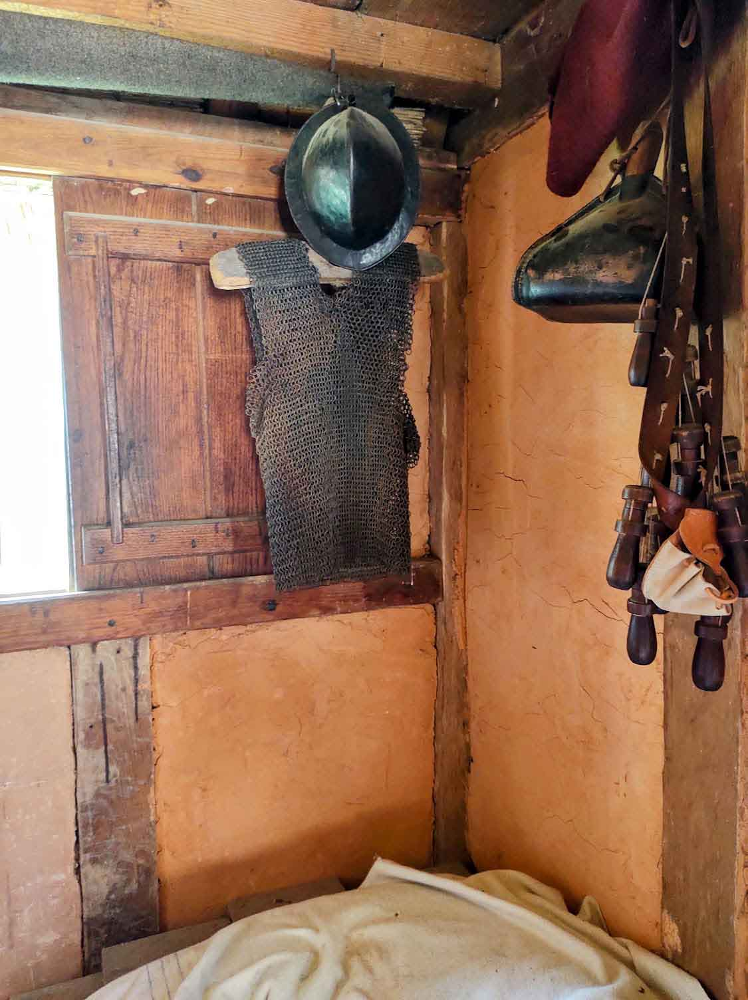

El Precio de la Profecía
La Grieta en el Desierto
Mientras la multitud celebra al mesías, Chani permanece en silencio. Ganaste poder sobre las masas, pero la distancia entre ambos se vuelve visible.

Mientras la multitud celebra al mesías, Chani permanece en silencio. Ganaste poder sobre las masas, pero la distancia entre ambos se vuelve visible.